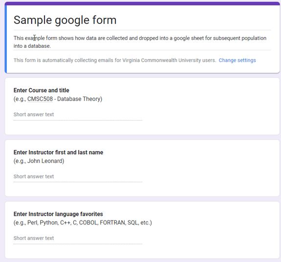
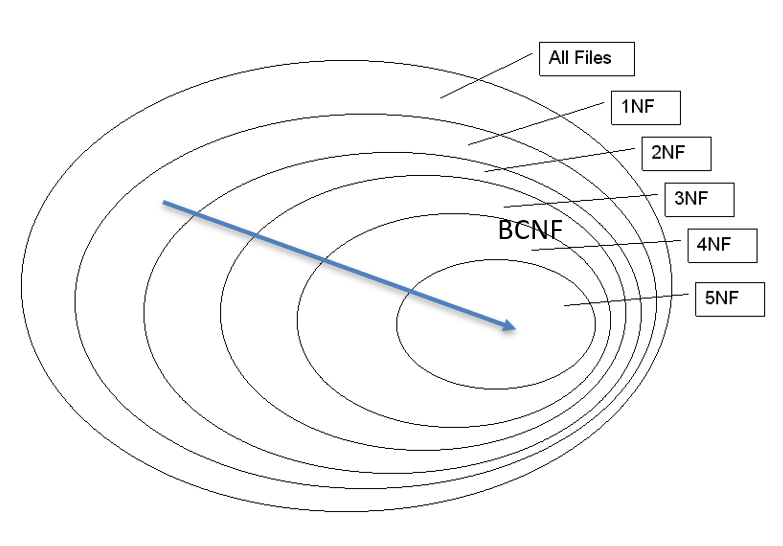

Analysis and Normal forms
Analysis and Normal forms
Relational database design to date
- Identify main entities and relationships
- Chen diagrams
- Populate entities with attributes
- Chen diagrams
- Crows foot diagrams
- Define the cardinality and participation of the relationships
- Crows foot diagrams
- Refine and simplify the model
- Relational model notation
- Translate the model to relational schemas
- Define keys
- Define queries using relational algebra
Are we there yet?
NO!!!! Then what else?
In the beginning … there was a google form …

… and then there were data, but …
| RID | Course | Instructor | Languages |
|---|---|---|---|
| 1 | CMSC508 Databases | John Leonard | SQL, Python, Perl |
| 2 | CMSC508 Databases | Alberto Cano | SQL, Python, C++ |
| 3 | CMSC475 UI/UX design | John Leonar | Javascript, Python |
| 4 | CMSC441 Capstone | Bob Dahlberg | COBOL, FORTRAN |
| 5 | CMSC320 Data Structures | Sarah Adams | C++, Java, Python |
| 6 | CMSC210 Software Design | Michael Turner | Java, C# |
| 7 | CMSC515 Computer Vision | Emily Parker | Python, MATLAB |
| 8 | CMSC430 Web Development | Jessica Clark | HTML, CSS, JavaScript |
| 9 | CMSC610 Machine Learning | Albert Cano | Python, R |
But the data were ill-formed and unusable
- Each row represents a response
- Can relational algebra be used?
- Which instructors know SQL?
- Who teaches CMSC508?
- Is there redundant data?
- Are there typos?
How do we describe what we see?
How do we fix it?
How do we know when it’s fixed?
Normal forms
Database normalization is the process of reorganizing the relations to minimize data redundancy.
Normalization involves breaking down a table into less redundant and smaller tables without losing information by using functional dependencies.
The objective is to isolate data to minimize duplicates and so modifications of an attribute can be made in just one table and then propagated through the rest of the database using the defined foreign keys and joins.
Escalating through the different normal forms removes more and more redundancy.

Normal forms
The usual suspects
- First Normal Form - 1NF
- A relation is in 1NF if and only if the domain of each attribute contains only atomic (indivisible) values and the value of each attribute contains only a single value from that domain.
- Second Normal Form - 2NF
- A relation is in 2NF if and only if it is in 1NF and all non-prime attributes (attributes not part of any candidate key) are fully functionally dependent on the entire candidate key.
- Third Normal Form - 3NF
- A relation is in 3NF if and only if it is in 2NF, and it has no transitive dependencies.
- Boyce-Codd Normal Form - BCNF
- A relation is in BCNF if and only if it is in 1NF, and for every non-trivial functional dependency A -> B, A is a superkey.
Crazy talk
- Fourth Normal Form - 4NF
- A relation is in 4NF if and only if it is in BCNF, and it has no multi-valued dependencies.
- Fifth Normal Form - 5NF
- A relation is in 5NF if and only if it is in 4NF, and it avoids join dependencies.
- Sixth Normal Form - 6NF
- A relation is in 6NF if and only if it is in 5NF, and it further eliminates all join dependencies and assures that every join dependency can be enforced by the superkeys of the relation.
- Seventh Normal Form - 7NF
- A relation is in 7NF if and only if it is in 6NF, and it eliminates all combinatorial join dependencies, ensuring that every possible join dependency is addressed.
Let’s get normal - Our starting position
| RID | Course | Instructor | Languages |
|---|---|---|---|
| 1 | CMSC508 Databases | John Leonard | SQL, Python, Perl |
| 2 | CMSC508 Databases | Alberto Cano | SQL, Python, C++ |
| 3 | CMSC475 UI/UX design | John Leonar | Javascript, Python |
| 4 | CMSC441 Capstone | Bob Dahlberg | COBOL, FORTRAN |
| 5 | CMSC320 Data Structures | Sarah Adams | C++, Java, Python |
| 6 | CMSC210 Software Design | Michael Turner | Java, C# |
| 7 | CMSC515 Computer Vision | Emily Parker | Python, MATLAB |
| 8 | CMSC430 Web Development | Jessica Clark | HTML, CSS, JavaScript |
| 9 | CMSC610 Machine Learning | Albert Cano | Python, R |
First Normal Form
A relation is in 1NF if and only if the domain of each attribute contains only atomic (indivisible) values and the value of each attribute contains only a single value from that domain.
- No multi-valued attributes. No arrays/lists in a cell.
- NOT REQUIRED BUT YOU SHOULD: break composite values
OK - let’s do it.
First, we remove multi-valued attributes by giving Languages their own row
Let’s get normal - First normal form
| RID | Course | Instructor | Language |
|---|---|---|---|
| 1 | CMSC508 Databases | John Leonard | SQL |
| 1 | CMSC508 Databases | John Leonard | Python |
| 1 | CMSC508 Databases | John Leonard | Perl |
| 2 | CMSC508 Databases | Alberto Cano | SQL |
| 2 | CMSC508 Databases | Alberto Cano | Python |
| 2 | CMSC508 Databases | Alberto Cano | C++ |
| 3 | CMSC475 UI/UX design | John Leonard | Javascript |
| 3 | CMSC475 UI/UX design | John Leonard | Python |
| 4 | CMSC441 Capstone | Bob Dahlberg | COBOL |
| 4 | CMSC441 Capstone | Bob Dahlberg | FORTRAN |
| 5 | CMSC320 Data Structures | Sarah Adams | C++ |
| 5 | CMSC320 Data Structures | Sarah Adams | Java |
| 5 | CMSC320 Data Structures | Sarah Adams | Python |
| 6 | CMSC210 Software Design | Michael Turner | Java |
| 6 | CMSC210 Software Design | Michael Turner | C# |
| 7 | CMSC515 Computer Vision | Emily Parker | Python |
| 7 | CMSC515 Computer Vision | Emily Parker | MATLAB |
| 8 | CMSC430 Web Development | Jessica Clark | HTML |
| 8 | CMSC430 Web Development | Jessica Clark | CSS |
| 8 | CMSC430 Web Development | Jessica Clark | JavaScript |
| 9 | CMSC610 Machine Learning | Alberto Cano | Python |
| 9 | CMSC610 Machine Learning | Alberto Cano | R |
First Normal Form
A relation is in 1NF if and only if the domain of each attribute contains only atomic (indivisible) values and the value of each attribute contains only a single value from that domain.
- No multi-valued attributes. No arrays/lists in a cell.
- NOT REQUIRED BUT YOU SHOULD: break composite values
Don’t stop now - let’s keep going!
Now let’s separate the composite attributes Course and Instructor into components.
Let’s get normal - First Normal Form
| RID | Course Code | Course Name | First | Last | Language |
|---|---|---|---|---|---|
| 1 | CMSC508 | Databases | John | Leonard | SQL |
| 1 | CMSC508 | Databases | John | Leonard | Python |
| 1 | CMSC508 | Databases | John | Leonard | Perl |
| 2 | CMSC508 | Databases | Alberto | Cano | SQL |
| 2 | CMSC508 | Databases | Alberto | Cano | Python |
| 2 | CMSC508 | Databases | Alberto | Cano | C++ |
| 3 | CMSC475 | UI/UX design | John | Leonard | Javascript |
| 3 | CMSC475 | UI/UX design | John | Leonard | Python |
| 4 | CMSC441 | Capstone | Bob | Dahlberg | COBOL |
| 4 | CMSC441 | Capstone | Bob | Dahlberg | FORTRAN |
| 5 | CMSC320 | Data Structures | Sarah | Adams | C++ |
| 5 | CMSC320 | Data Structures | Sarah | Adams | Java |
| 5 | CMSC320 | Data Structures | Sarah | Adams | Python |
| 6 | CMSC210 | Software Design | Michael | Turner | Java |
| 6 | CMSC210 | Software Design | Michael | Turner | C# |
| 7 | CMSC515 | Computer Vision | Emily | Parker | Python |
| 7 | CMSC515 | Computer Vision | Emily | Parker | MATLAB |
| 8 | CMSC430 | Web Development | Jessica | Clark | HTML |
| 8 | CMSC430 | Web Development | Jessica | Clark | CSS |
| 8 | CMSC430 | Web Development | Jessica | Clark | JavaScript |
| 9 | CMSC610 | Machine Learning | Alberto | Cano | Python |
| 9 | CMSC610 | Machine Learning | Alberto | Cano | R |
First Normal Form
A relation is in 1NF if and only if the domain of each attribute contains only atomic (indivisible) values and the value of each attribute contains only a single value from that domain.
- No multi-valued attributes. No arrays/lists in a cell.
- NOT REQUIRED BUT YOU SHOULD: break composite values
Where do we go from here?
- How many entities do we have?
- Can you identify redundancies?
- What is primary/candidate key? Why?
- What are functional dependencies?
- How would you remove redundancies?
Goal - get to Boyce Codd Normal Form (3.5NF)
| RID | Course Code | Course Name | First | Last | Language |
|---|---|---|---|---|---|
| 1 | CMSC508 | Databases | John | Leonard | SQL |
| 1 | CMSC508 | Databases | John | Leonard | Python |
| 1 | CMSC508 | Databases | John | Leonard | Perl |
| 2 | CMSC508 | Databases | Alberto | Cano | SQL |
| 2 | CMSC508 | Databases | Alberto | Cano | Python |
| 2 | CMSC508 | Databases | Alberto | Cano | C++ |
| 3 | CMSC475 | UI/UX design | John | Leonard | Javascript |
| 3 | CMSC475 | UI/UX design | John | Leonard | Python |
| 4 | CMSC441 | Capstone | Bob | Dahlberg | COBOL |
| 4 | CMSC441 | Capstone | Bob | Dahlberg | FORTRAN |
| 5 | CMSC320 | Data Structures | Sarah | Adams | C++ |
| 5 | CMSC320 | Data Structures | Sarah | Adams | Java |
| 5 | CMSC320 | Data Structures | Sarah | Adams | Python |
| 6 | CMSC210 | Software Design | Michael | Turner | Java |
| 6 | CMSC210 | Software Design | Michael | Turner | C# |
| 7 | CMSC515 | Computer Vision | Emily | Parker | Python |
| 7 | CMSC515 | Computer Vision | Emily | Parker | MATLAB |
| 8 | CMSC430 | Web Development | Jessica | Clark | HTML |
| 8 | CMSC430 | Web Development | Jessica | Clark | CSS |
| 8 | CMSC430 | Web Development | Jessica | Clark | JavaScript |
| 9 | CMSC610 | Machine Learning | Alberto | Cano | Python |
| 9 | CMSC610 | Machine Learning | Alberto | Cano | R |
BCNF or 3.5NF
A relation is in BCNF if and only if it is in 1NF, and for every non-trivial functional dependency A -> B, A is a superkey.
- Keys
- Uniquely define entire rows.
- Functional Dependencies
- Uniquely defines relationships within rows.
- BCNF
- If you have a relationship within a row, it better be with a key!
The key, the whole key and nothing but the key, so help me Codd!
How do we get there from here?
We need to decompose the table replacing duplicate data with foreign keys. This will remove redundancy at the expense of creating new tables with joins.
Here is there - a fully BCNF schema
| RID | Course Code | First | Last | Language |
|---|---|---|---|---|
| 1 | CMSC508 | John | Leonard | SQL |
| 1 | CMSC508 | John | Leonard | Python |
| 1 | CMSC508 | John | Leonard | Perl |
| 2 | CMSC508 | Alberto | Cano | SQL |
| 2 | CMSC508 | Alberto | Cano | Python |
| 2 | CMSC508 | Alberto | Cano | C++ |
| 3 | CMSC475 | John | Leonard | Javascript |
| 3 | CMSC475 | John | Leonard | Python |
| 4 | CMSC441 | Bob | Dahlberg | COBOL |
| 4 | CMSC441 | Bob | Dahlberg | FORTRAN |
| 5 | CMSC320 | Sarah | Adams | C++ |
| 5 | CMSC320 | Sarah | Adams | Java |
| 5 | CMSC320 | Sarah | Adams | Python |
| 6 | CMSC210 | Michael | Turner | Java |
| 6 | CMSC210 | Michael | Turner | C# |
| 7 | CMSC515 | Emily | Parker | Python |
| 7 | CMSC515 | Emily | Parker | MATLAB |
| 8 | CMSC430 | Jessica | Clark | HTML |
| 8 | CMSC430 | Jessica | Clark | CSS |
| 8 | CMSC430 | Jessica | Clark | JavaScript |
| 9 | CMSC610 | Alberto | Cano | Python |
| 9 | CMSC610 | Alberto | Cano | R |
| Course Code | Course Name |
|---|---|
| CMSC210 | Software Design |
| CMSC320 | Data Structures |
| CMSC430 | Web Development |
| CMSC441 | Capstone |
| CMSC475 | UI/UX design |
| CMSC508 | Databases |
| CMSC515 | Computer Vision |
| CMSC610 | Machine Learning |
| First | Last |
|---|---|
| Alberto | Cano |
| Bob | Dahlberg |
| Sarah | Adams |
| John | Leonard |
| Michael | Turner |
| Emily | Parker |
| Jessica | Clark |
| Language |
|---|
| SQL |
| Python |
| Perl |
| C++ |
| Javascript |
| COBOL |
| FORTRAN |
| Java |
| C# |
| MATLAB |
| HTML |
| CSS |
| R |
| RID |
|---|
| 1 |
| 2 |
| 3 |
| 4 |
| 5 |
| 6 |
| 7 |
| 8 |
| 9 |
Try 2 - towards BCNF
| RID | CID | Course Code | Course Name | PID | First | Last | LID | Language |
|---|---|---|---|---|---|---|---|---|
| 1 | 1 | CMSC508 | Databases | 1 | John | Leonard | 1 | SQL |
| 1 | 1 | CMSC508 | Databases | 1 | John | Leonard | 2 | Python |
| 1 | 1 | CMSC508 | Databases | 1 | John | Leonard | 3 | Perl |
| 2 | 1 | CMSC508 | Databases | 2 | Alberto | Cano | 1 | SQL |
| 2 | 1 | CMSC508 | Databases | 2 | Alberto | Cano | 2 | Python |
| 2 | 1 | CMSC508 | Databases | 2 | Alberto | Cano | 4 | C++ |
| 3 | 2 | CMSC475 | UI/UX design | 1 | John | Leonard | 5 | Javascript |
| 3 | 2 | CMSC475 | UI/UX design | 1 | John | Leonard | 2 | Python |
| 4 | 3 | CMSC441 | Capstone | 3 | Bob | Dahlberg | 6 | COBOL |
| 4 | 3 | CMSC441 | Capstone | 3 | Bob | Dahlberg | 7 | FORTRAN |
| 5 | 4 | CMSC320 | Data Structures | 4 | Sarah | Adams | 4 | C++ |
| 5 | 4 | CMSC320 | Data Structures | 4 | Sarah | Adams | 8 | Java |
| 5 | 4 | CMSC320 | Data Structures | 4 | Sarah | Adams | 2 | Python |
| 6 | 5 | CMSC210 | Software Design | 5 | Michael | Turner | 8 | Java |
| 6 | 5 | CMSC210 | Software Design | 5 | Michael | Turner | 9 | C# |
| 7 | 6 | CMSC515 | Computer Vision | 6 | Emily | Parker | 2 | Python |
| 7 | 6 | CMSC515 | Computer Vision | 6 | Emily | Parker | 10 | MATLAB |
| 8 | 7 | CMSC430 | Web Development | 7 | Jessica | Clark | 11 | HTML |
| 8 | 7 | CMSC430 | Web Development | 7 | Jessica | Clark | 12 | CSS |
| 8 | 7 | CMSC430 | Web Development | 7 | Jessica | Clark | 5 | JavaScript |
| 9 | 8 | CMSC610 | Machine Learning | 2 | Alberto | Cano | 2 | Python |
| 9 | 8 | CMSC610 | Machine Learning | 2 | Alberto | Cano | 13 | R |
Try 2 - Final BCNF solution
| CID | Course Code | Course Name |
|---|---|---|
| 1 | CMSC508 | Databases |
| 2 | CMSC475 | UI/UX design |
| 3 | CMSC441 | Capstone |
| 4 | CMSC320 | Data Structures |
| 5 | CMSC210 | Software Design |
| 6 | CMSC515 | Computer Vision |
| 7 | CMSC430 | Web Development |
| 8 | CMSC610 | Machine Learning |
| PID | First | Last |
|---|---|---|
| 1 | John | Leonard |
| 2 | Alberto | Cano |
| 3 | Bob | Dahlberg |
| 4 | Sarah | Adams |
| 5 | Michael | Turner |
| 6 | Emily | Parker |
| 7 | Jessica | Clark |
| LID | Language |
|---|---|
| 1 | SQL |
| 2 | Python |
| 3 | Perl |
| 4 | C++ |
| 5 | Javascript |
| 6 | COBOL |
| 7 | FORTRAN |
| 8 | Java |
| 9 | C# |
| 10 | MATLAB |
| 11 | HTML |
| 12 | CSS |
| 13 | R |
| RID |
|---|
| 1 |
| 2 |
| 3 |
| 4 |
| 5 |
| 6 |
| 7 |
| 8 |
| 9 |
| RID | CID | PID | LID |
|---|---|---|---|
| 1 | 1 | 1 | 1 |
| 1 | 1 | 1 | 2 |
| 1 | 1 | 1 | 3 |
| 2 | 1 | 2 | 1 |
| 2 | 1 | 2 | 2 |
| 2 | 1 | 2 | 4 |
| 3 | 2 | 1 | 5 |
| 3 | 2 | 1 | 2 |
| 4 | 3 | 3 | 6 |
| 4 | 3 | 3 | 7 |
| 5 | 4 | 4 | 4 |
| 5 | 4 | 4 | 8 |
| 5 | 4 | 4 | 2 |
| 6 | 5 | 5 | 8 |
| 6 | 5 | 5 | 9 |
| 7 | 6 | 6 | 2 |
| 7 | 6 | 6 | 10 |
| 8 | 7 | 7 | 11 |
| 8 | 7 | 7 | 12 |
| 8 | 7 | 7 | 5 |
| 9 | 8 | 2 | 2 |
| 9 | 8 | 2 | 13 |
Discussion
- The attributes in each relation depend on the primary key, the whole key and nothing else.
- No duplicates in each table.
- We can reconstruct the original table
\[ Original = Join \bowtie Crse \bowtie Inst \bowtie Lang \bowtie Resp \]
Queries
Who knows SQL? \[ \pi_{(First, Last)}(\theta_{(Language=SQL)}Join \bowtie Lang \bowtie Inst) \]
What courses are taught by python programmers?
\[ \pi_{Course Name}(\theta_{(Language=python)}Join \bowtie Lang \bowtie Inst \bowtie Crse) \]
What languages are known by instructors of CMSC508?
\[ \pi_{Language}(\theta_{(Course Code=CMSC508)}Join \bowtie Lang \bowtie Inst \bowtie Crse) \]
This CS - we need an algorithm!
The preceding examples show how an original table can be decomposed to minimize redundancy and improve integrity.
This manual, by inspection approach is not acceptable for computer science!
So of course, we can develop a notation and implement an algoritm to analyze relations.
This algorithm can be used to clean up original tables, or verify existing tables are BCNF.
We’ll be spending the next bunch of lectures working with these algorithms.
Housekeeping
- No homework dues this week!
- Project deliverable 4 - posted and available
- Quiz and quiz stats - Very nice!
- Peer reviews - still some issues.
- Changes to schedule (Version 4, see table below)
- Discuss Quarto
#| echo: false from src.utils import upcoming_calendar # Set the lecture ID and number of rows to show at the top of this file! upcoming_calendar( lecture_id, n_rows )

CMSC 408 - Databases